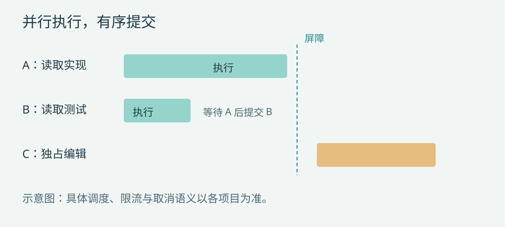

第 8 章 调度设计：有界并发、独占屏障与稳定历史
并发要先回答共享什么
两个工具都叫 read，不代表没有共享状态：它们可能使用同一登录连接、同一远程限额或修改访问游标。并发分类应由实现声明，输入相关资源键由规范化参数提取。第一版可以使用 parallel/exclusive；更复杂系统再引入 read(resource)、write(resource) 和容量限额。
Codex 以共享/独占准入组织工具；DeepSeek 使用有界池与独占屏障；Pi 低层支持顺序和并行批次；Claude Code 根据工具输入判断并发安全。C06D03P01A05

划分三个阶段
prepare 包括规范化、策略与授权；dispatch/body 产生真实执行；finalize 包括后置策略和结果接纳。推荐保持策略与最终提交的源顺序，让安全的工具体重叠。这样模型请求 A、B 时，B 提前完成不改变下一次历史顺序。
有序提交的代价是队首等待。A 很慢，B 已结束，B 的稳定结果仍等 A；但 UI 可通过临时完成事件展示进度。若要取消队首等待，必须重新定义历史顺序与因果关系，而不是把结果数组随手换成完成顺序。
滚动池的关键伪代码
next_start = 0; next_commit = 0
while unstarted or inflight:
fill capacity until an exclusive barrier
wait for one execution to settle
place outcome into its ordinal slot
while slot[next_commit] is settled:
finalize and commit that slot
next_commit += 1
reclassify the next unstarted call独占调用到达时先排空已运行组；独占结束后再启动后续组。若工具注册或策略随前面结果变化，未启动调用需要重新分类。DeepSeek 的调度器提供了这种“按序策略、有界执行、按序结果”的具体参考。D03
依赖不能靠工具顺序猜测
同一助手响应中“编辑”和“测试”存在依赖。简单方案要求独占写工具形成屏障，模型下一步才提出测试。显式工作流可以使用 depends_on，但必须检查图无环、依赖结果成功、输入引用有效。不要根据工具名称自动猜测所有依赖。
即便结果有序，两个并发副作用仍可能相互覆盖。历史顺序不是数据库事务顺序；需要工具分类、资源锁或外部系统并发控制共同保证。
资源锁与容量分开管理
并发上限控制资源使用，文件锁控制冲突，远程 provider 配额控制服务限制。不要用一个全局 semaphore 代替三者。推荐统一获取顺序：全局配额 → provider 配额 → 排序后的资源锁，避免调用 A 持有文件锁等配额、调用 B 持有配额等文件锁。
多资源锁按稳定资源键排序，并设置等待截止时间。锁超时应返回调度等待失败，不要冒充工具业务失败；取得锁后再检查文件版本，因为等待期间现实内容可能变化。
取消与失败如何排空
取消后停止补充池，向可取消执行发送信号，等待已开始调用结算。对尚未启动的调用生成明确的 cancelled result；对已开始但不能确认结果的写操作保留 unknown。内部调度异常同样需要排空已开始任务，不能让孤立 coroutine 留在后台继续写文件。
Promise.all 或 asyncio.gather 遇到一个异常时，其他任务未必已经结束。调度器必须明确收集全部已启动任务，或让执行层把普通工具失败归一化成结果。不能在第一项报错后就向用户宣告整批停止。
源码细节：上下文归属与并发准入
源码事实：Codex 的 ToolCallRuntime 保留声明这批工具时的 Arc<StepContext>；注释明确说明，调用可能稍后才运行，仍应使用当时向模型展示工具的 step。调度使用 RwLock<()>，支持并行的调用取得共享锁，其他调用取得独占锁。等待准入阶段也受取消控制。这里的锁表达工具并发分类，不是按文件路径建立的事务锁。C06
Claude Code 的 StreamingToolExecutor 先解析工具输入，再调用工具的 isConcurrencySafe(parsedInput.data)；canExecuteTool() 要求新调用和现有运行调用的并发性质兼容。因此是否可并发可以依赖具体参数，而非只由工具名称决定。该执行器还区分子级和父级 AbortController，部分同组错误可以取消兄弟工具，而不直接结束父查询。不能据此推导所有工具错误都取消整批。A05
设计判断：保留声明时的上下文可以避免排队后的版本错配，按参数分类比名称分类更精确。但即使两个工具均允许并发，也仍需由文件前置条件、资源锁或远端并发控制防止同一资源被覆盖。结果有序不是副作用隔离。
源码细节：取消前后是否已经启动正文
DeepSeek 的执行状态记录 bodyInvoked。正文尚未启动时，取消生成 ABORTED_BEFORE_DISPATCH；正文已经启动时采用 ABORTED 类结果。dispatchToolBody() 把原调用者信号与 around-wrapper 的信号合并，避免 wrapper 替换信号后丢失上层取消；已经开始的 Promise 等待收敛，再选择结果。D05
这意味着取消不是简单的 Promise.race 后遗弃慢任务。工具必须响应取消才能及时停止；不合作的正文仍可能继续等待。ABORTED 也不证明文件和外部服务未变化，不能把它转换为自动重试许可。
Codex 则依据 handler 的 finishes_on_cancellation 等信息决定取消后的等待或中止行为，准入阶段与已经运行的 handler 分开处理。因此不能把某一个项目的“等待正文收敛”当作所有 runtime 共有的固定行为。C06
本书建议持久层进一步区分“确认未派发”“已启动且有结果”“已启动但效果未知”，并把已取得的副作用证据保留下来。它是恢复设计要求，不能仅从 ABORTED 这个错误码推断当前文件状态。
参考实现的简化
本书程序使用有界 semaphore 执行连续 parallel 组，整组收敛后按序提交；exclusive 单独执行。它没有实现滚动结果立即提交、动态重新分类和资源图锁。这样保留核心语义，便于用测试观察，也明确了从教学内核升级到平台调度器的路线。
验收应检查最大活跃数、独占期间无其他执行、完成乱序但提交稳定、取消后不再启动，以及某项失败后仍能收集已启动结果。